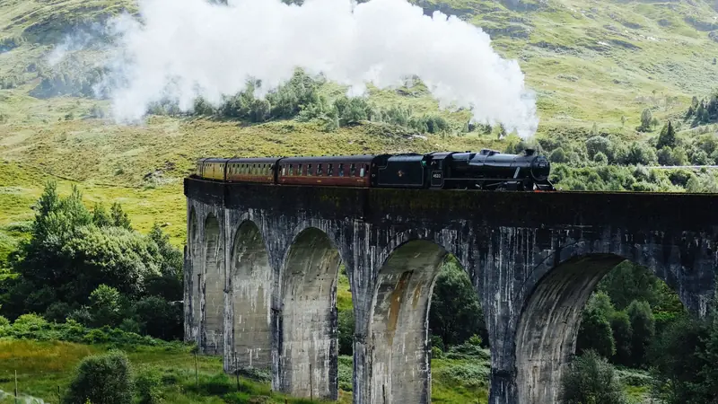
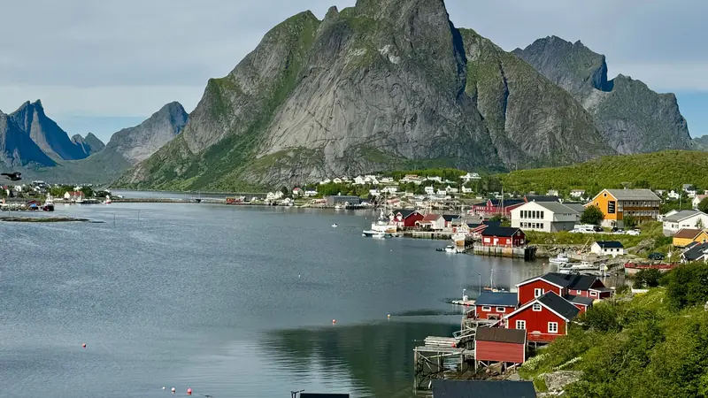

Hut to hut across the Dolomites
Six days on the Alta Via 1, sleeping in mountain huts, with nothing but a day pack and a lot of pasta.

Trail and rail writer
I spent ten years as a mountain guide in northern Sweden before I started writing. I like long days on foot, cold lakes and trains that take the scenic route even when there is a faster one.
My stories always include the boring parts: what to book, what to carry and where the hill was steeper than the map suggested.
Six days on the Alta Via 1, sleeping in mountain huts, with nothing but a day pack and a lot of pasta.

Lochs, moors and a famous viaduct: five hours from Glasgow to the sea on an ordinary timetabled train.

Norway's right to roam lets you pitch a tent almost anywhere. Here is how to do it well in Lofoten.